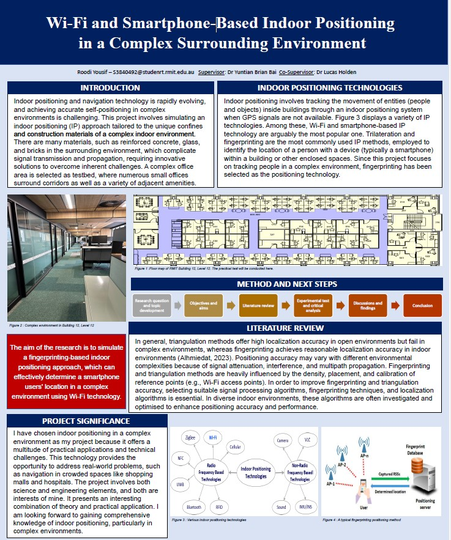
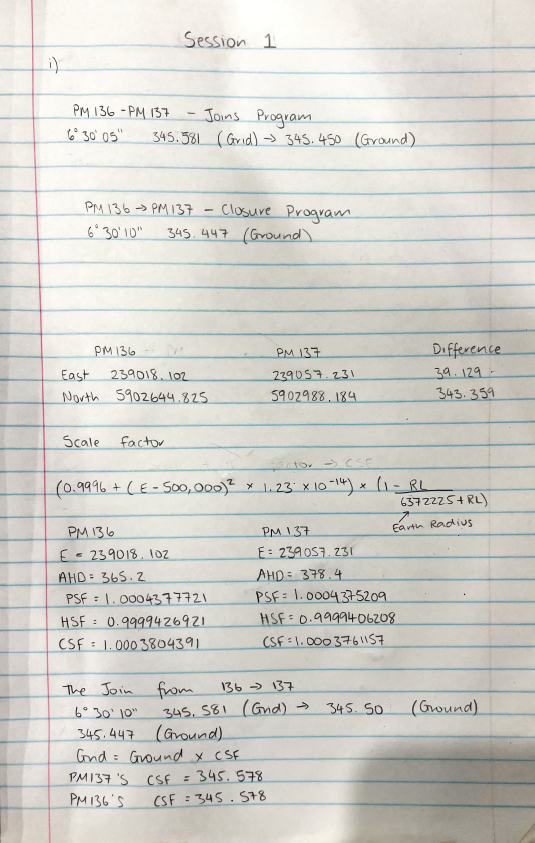
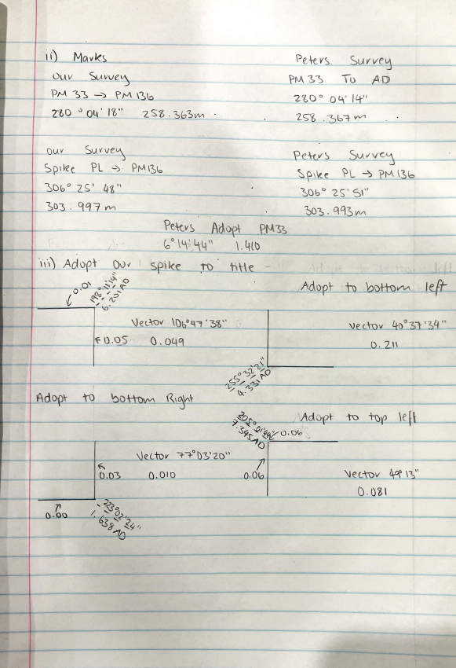
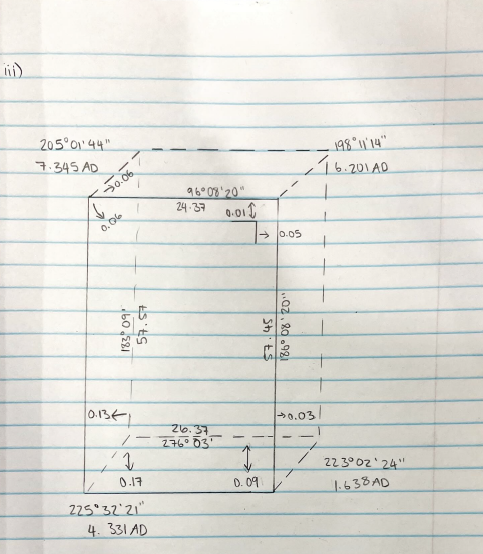
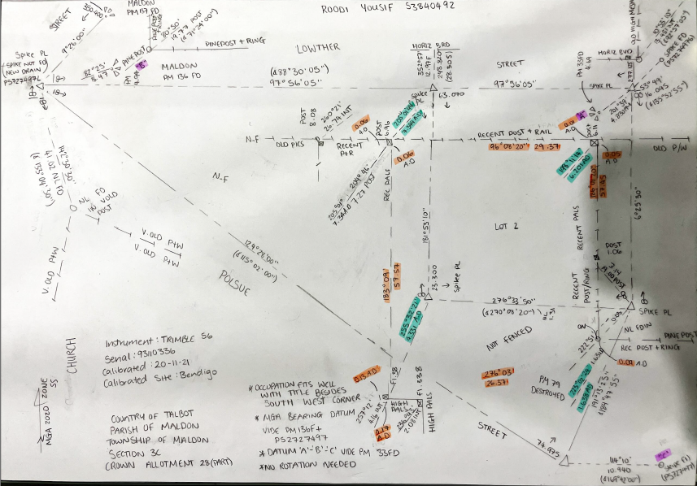
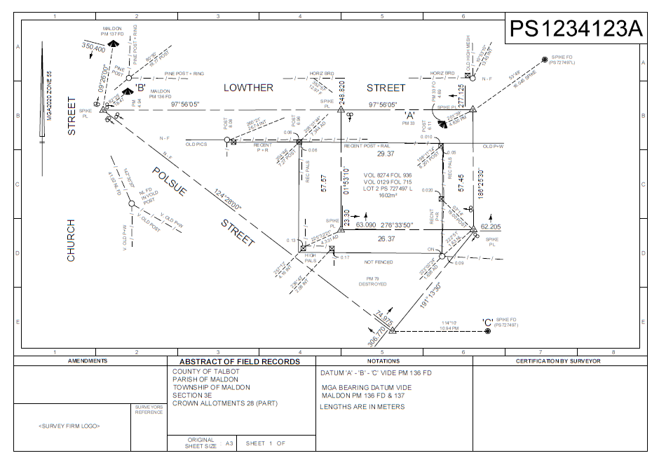
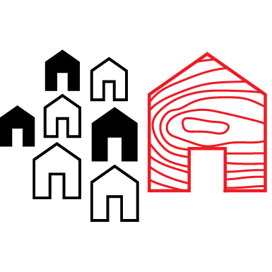

Geoportfolio
Roodi Yousif
About
Hi there! Welcome to my Geoportfolio. My name is Roodi Yousif. I was born in Iraq and raised in Melbourne, Australia. As of August 2024, I am in my fourth and final year of the Bachelor of Surveying degree at RMIT University. My surveying-related interests include cadastral surveying, GPS work, construction surveying, and drafting feature surveys. My final year major project that I am currently working on consists of looking at current Wi-Fi and Smartphone-Based Indoor Positioning in a Complex Surrounding Environment. The aim of the research is to simulate a fingerprinting-based indoor positioning approach, which can effectively determine a smartphone users' location in a complex environment using Wi-Fi technology. My own personal hobbies include gym, soccer, cars, and going out.
Academic Portfolio Overview
Capstone Project: Wi-Fi and Smartphone-Based Indoor Positioning
The Capstone (Design) is the first half of the final year major project assessment. It focuses on designing and proposing your very own major project. You are then paired with a supervisor, who will guide you throughout the remainder of the year to make sure the ambitious project comes to fruition. Below are the key assessments and activities:
- Assessment 1: Student supervisor agreement. An agreement signed by both parties that outlines the expected duties from each other. This includes the frequency of meetings.
- Assessment 2: Poster conference presentation. Creation of a poster that showcases your major project and its research questions. Presented to other staff and industry professionals.
- Assessment 3: Literature Review and project plan. A report of similar published literature directly relevant to your project. The project plan sets out the expected timeline for the remainder of the year.
Below are photos related to my Capstone project:
Capstone Poster

Note: If the display is too small, right-click the image and 'Open in new tab' to allow zooming of the image.
3D Modeling and Point Cloud Analysis Project
This project involved creating 3D models and analyzing point clouds using various software tools. The key steps included:
- Interior and exterior orientation estimation.
- Generating and refining sparse and dense point clouds.
- Creating mesh models from point clouds.
- Implementing ground control points for georeferencing.
The following images represent different stages of the project:
Parkville Practical Assessment
Cadastral Surveying Practice is a project also completed by me. It focuses on becoming familiar with key cadastral surveying concepts. Such as: Cadastral Surveying Law also gave me the opportunity to gain more practical experience, by doing a full surveying in the suburb of Parkville. This was then drafted on a handwritten A3 sheet of paper. Comps were done on HP35. Below is my submission for the Parkville Practical Assessment.
Parkville Practical Assessment Photos





Industry Experience
This page briefly covers my work experience within the surveying industry. I have worked as a Surveyor Assistant, gaining experience in tasks such as feature surveys, re-establishments, and GPS survey tasks.
Peter Richards Surveying

Surveyor Assistant
January 2024 - Present
My role at Peter Richards Surveying involves assisting senior surveyors in conducting feature surveys, re-establishments, and ensuring precise data collection and documentation. I also manage GPS survey tasks and support the set-outs department.
Skills and Proficiencies